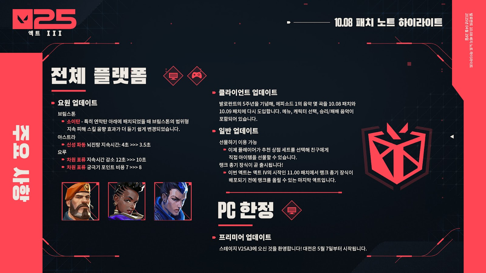

발로란트 10.08 업데이트 요약

요원 업데이트
브림스톤
- 소이탄은 막탄 아래에 배치되었을 때 브림스톤의 범위형 지속 피해 스킬 음향 효과가 더 듣기 쉽게 변경되었습니다.
아스트라 - 신성 파동 뇌진탕 지속시간: 4초 >>> 3.5초
요루 - 차원 표류 지속 시간 감소 12초 >>> 10초 // 차원 표류 궁극기 포인트 비용 7 >>> 8
선물하기 기능추가
10.08 패치부터 선물하기가 공식적으로 출시됩니다. 액트의 첫 번째 세트를 시작으로, 이제 플레이어가 추천 상점 세트를 선택해 친구에게 직접 아이템을 선물할 수 있습니다.
선물하는 방법:
- 상점으로 이동합니다.
- 세부 사항 페이지를 열어 추천 세트 또는 아이템을 확인합니다.
- 화면 오른쪽 아래의 선물 버튼을 클릭합니다.
- 받는 사람을 선택합니다. (제한이 적용됩니다.)
- 선물할 전체 세트 또는 개별 아이템을 선택합니다.
- 선물을 전송합니다!
플레이어 여러분의 선물을 받는 사람은 다음에 발로란트에 로그인할 때 선물 수락 또는 거절 요청을 받게 됩니다.
선물하기는 현재 추천 상점 아이템으로 한정되지만, 추후 업데이트를 통해 지원 영역을 확장할 계획입니다.
자세한 정보 및 선물하기 요구 조건은 고객 지원 페이지에서 확인하실 수 있습니다.
클라이언트 업데이트
발로란트의 5주년을 기념해, 에피소드 1의 음악 몇 곡을 10.08 패치와 10.09 패치에 다시 도입합니다. 메뉴, 캐릭터 선택, 승리/패배 음악이 포함되어 있습니다.
랭크 총기 장식이 곧 출시됩니다!
- 액트 III가 오늘 시작됩니다!
- 따라서 이번 액트가 액트 IV의 시작인 11.00 패치에서 랭크 총기 장식이 배포되기 전에 랭크를 올릴 수 있는 마지막 액트라는 점을 여러분께 상기시켜 드리고 싶었습니다.
- 액트 III가 종료되면, 2025 시즌 첫 세 개의 액트를 통틀어 달성한 최고 랭크에 따라 랭크 총기 장식을 받게 됩니다.
맵 업데이트
선셋이 경쟁전 및 데스매치 대기열에 다시 추가되었습니다.
프랙처가 경쟁전 및 데스매치 대기열에서 제외되었습니다.
버그 수정
요원
- 웨이레이
초점 교차를 사용한 직후 굴절을 다시 활성화할 때 스킬이 제대로 작동하지 않던 버그를 수정했습니다.
- 하버
하버의 물의 팔찌가 가끔 어센트의 문처럼 얇은 벽 사이로 새어 나오던 버그를 수정했습니다.
- 데드록
데드록의 장벽망의 중앙 지점을 사격할 때 타격 음향 효과가 나오지 않던 버그를 수정했습니다.
데드록의 장벽망이 플레이어를 위로 올릴 수 있던 버그를 수정했습니다.
- 바이스
바이스의 아크 장미가 파괴된 후 아크 장미의 재사용 대기시간이 제대로 설정되지 않던 버그를 수정했습니다.
바이스가 가지치기의 벽을 활성화했으나 점차 흐려지는 시각 효과 경고가 표시되지 않던 버그를 수정했습니다.
바이스의 가지치기로 생성된 벽이 벽 시각 효과가 사라진 후에도 총알을 막던 버그를 수정했습니다.
바이스의 강철 정원 경고 표시가 실제 스킬 범위와 맞지 않게 표시되던 버그를 수정했습니다.
- 요루
요루의 분신이 벽으로 달려갈 때 일반적인 플레이어의 움직임과 살짝 달라지게 만들던 버그 수정을 되돌렸습니다.
- 스카이
스카이의 정찰자가 뛰어오르는 속도가 웨이레이의 포화로 인한 해로운 효과에도 느려지지 않던 버그를 수정했습니다.
- 게코
게코의 요동봇이 뛰어오르는 속도가 웨이레이의 포화로 인한 해로운 효과에도 느려지지 않던 버그를 수정했습니다.
- 테호
플레이어가 테호의 잠입 드론 위로 올라갈 수 있던 버그를 수정했습니다.
사이퍼의 카메라로 잠입 드론을 표시할 수 없던 버그를 수정했습니다.
아마겟돈의 시각 효과가 사용 이후에도 남아 있던 버그를 수정했습니다.
아마겟돈의 뒤쪽에서 달려오던 플레이어에게 위험 표시가 나타나지 않던 버그를 수정했습니다.
- 레이나
레이나가 포식으로 체력을 과다 회복할 때 현재 과다 회복량보다 적은 피해를 받으면 방해받지 않던 버그를 수정했습니다.
- 아이소
아이소의 구슬 보호막 툴팁이 재장전 속도 증가 효과를 언급하도록 변경했습니다.
PC 한정
프리미어 업데이트- 스테이지 V25A3에 오신 것을 환영합니다! 대전은 5월 7일부터 시작됩니다.
- 프리미어 참가 제한을 변경했습니다. 단순히 30일 동안 부적격 상태가 되는 대신, 이제 방해 행위를 한 플레이어는 행위의 심각성과 활성화된 제재 기간에 따라 일정 시간 동안 프리미어에 참가할 수 없습니다.
버그 수정- 요약 화면에서 랭크 방어에 커서를 올렸을 때 나타나던 텍스트의 크기를 줄였습니다.
콘솔 한정
버그 수정길이가 긴 플레이어의 이름이 타임라인 화면의 특정 요소와 중복되던 버그를 수정했습니다.현재 시즌의 랭크 요구 조건을 설명하는 텍스트가 액트 랭크 화면에 표시되지 않던 버그를 수정했습니다.액트 랭크 화면의 텍스트를 시즌에 맞게 변경했습니다.
발로란트 공식 다음 패치노트로 이동//발로란트 공식 이전 패치노트로 이동